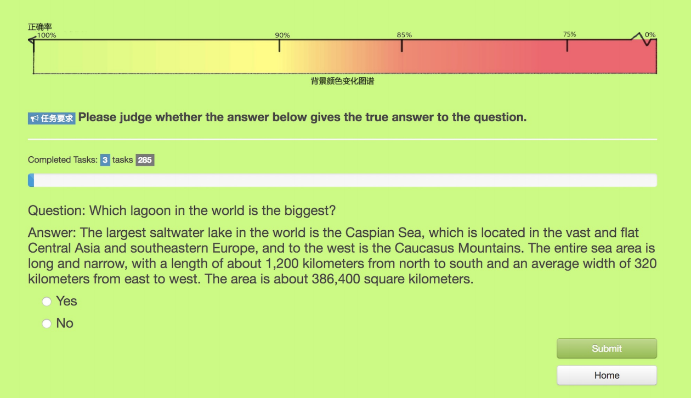
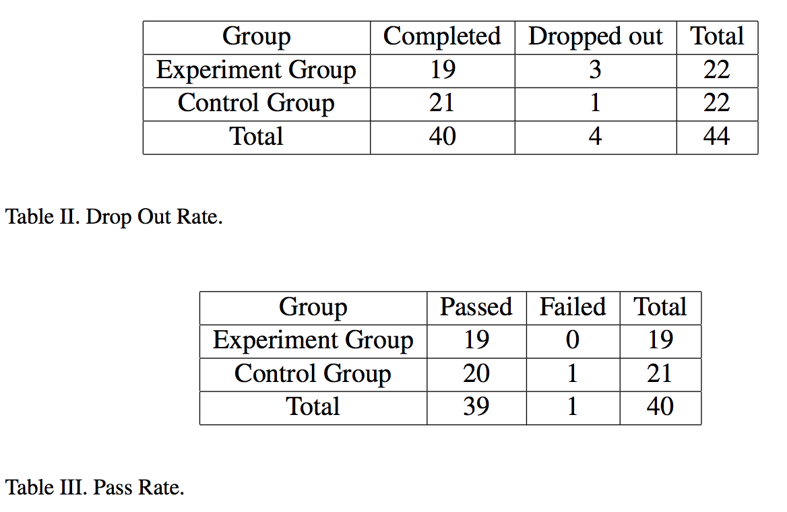
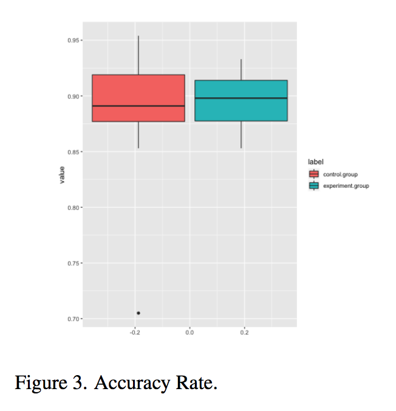
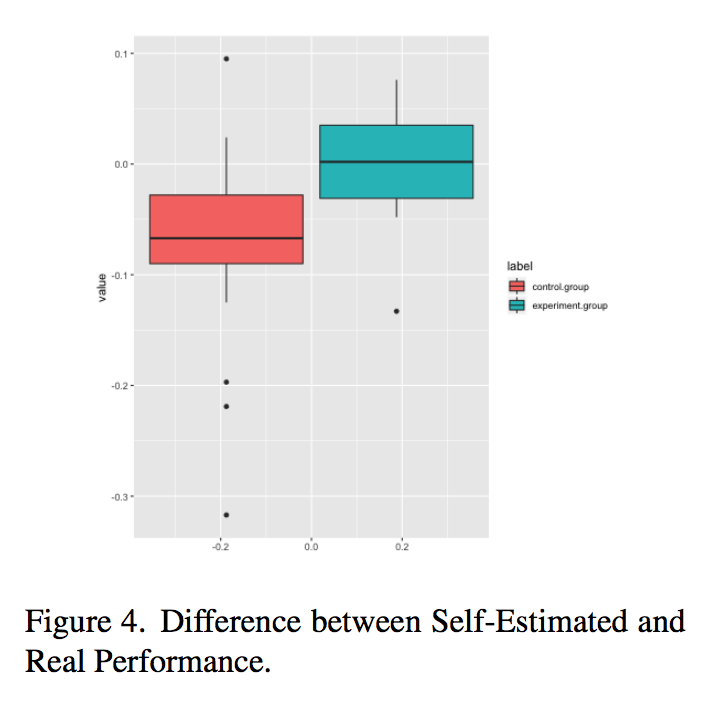

Overview
This project is an interface for crowdsourcing systems, aiming to improve crowd workers' user experience and working quality. Specifically, we utilized the background color of the website to tell users their estimated accuracy, which was calculated by an estimation algorithm. We also employed both qualitative and quantitative methods to test the performance.
My Contributions
assisted in design, responsible for literature review, user study (survey & interview) and paper writing
Why to Conduct this Research: the Design Problem
Through literature review, I found that the main motivation of crowd workers to do crowd tasks is money incentives. However, many crowd workers are suffering from the information gap between the task requester and workers -- the task requester know why the submitted answers are rejected, while crowd workers only received a simple notice of rejection. This made many crowd workers feel unfair and their motivation decreased. Some researchers have found that the feedback from experts/peers is effective to improve the user experience of crowd workers [Dow, S., A. Kulkarni, S. Klemmer, and B. Hartmann (2012): ‘Shepherding the crowd yields better work’. In: Proceedings of the ACM 2012 conference on Computer Supported Cooperative Work. Seattle, Washington, USA, pp. 1013–1022.], however it costs both time and money. Therefore, we aimed to propose a new interface to offer crowd workers feedback automatically.
Outcome
We leveraged accuracy estimation algorithm proposed by [Feng, J., G. Li, H. Wang, and J. Feng (2014): ‘Incremental Quality Inference in Crowdsourcing’. In: International Conference on Database Systems for Advanced Applications. pp. 453–467.], to calculate the estimated accuracy of workers, and we told users their estimated accuracy by the background color of the site, as shown in the screenshot below. Specifically, through a pilot study, we correspond the color schema with an accuracy ranging from 75% to 100%, so that participants could easily see the change of color. That is, the accuracy rate of 75% corresponds to the reddest color, and the accuracy rate of 100% corresponds to the greenest.
Evaluation
To test the performance and effect of the interface, we employed both quantitative and qualitative methods to do user study.Experiment Design
44 participants were recruited for the study, who were evenly divided into control group and experiment group. We gave participants two days to complete all the tasks, so they could choose any time they like and pause whenever they want, as a way to simulate the real world situation.Back-end Data Results
By analyzing back-end data, we found that:

Survey
Participants were asked to do a survey regarding their work experience. Questions covered concentration, confidence, expected accuracy, perseverance etc. Results show that:
Interviews
We recruited 10 interviewees before the experiment started and sought out one more who chose to quit the task. Our questions mainly focused on how they felt about the feedback display, whether it accorded with their own estimation, how they were possibly influenced by the feedback display, and whether they liked to have the display or not, and why.Basically, the interface was well received by our participants. Here are the main advantages.